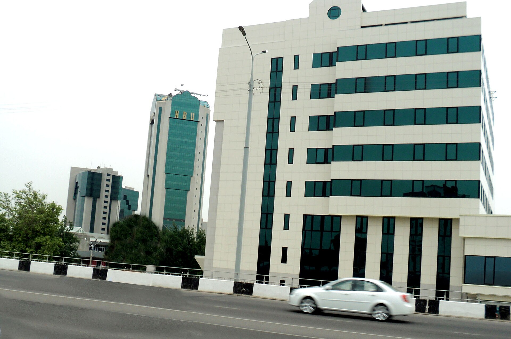

$8 Billion in State Assets Put Up for Sale: Turonbank, IBC and Uzexpocentre on the List
Under a presidential decree signed Aug. 28, state stakes in 62 companies will be put up for auction by 2028. Proceeds of 14 trillion soums are planned by year's end; a “golden share” mechanism will be introduced at strategic enterprises.

According to information released on Sept. 8, 2026, the president signed a decree on Aug. 28 introducing new mechanisms for privatizing state assets. The document states the aim of reducing the state's participation in the economy.
The decree approved a new privatization program covering real estate, land plots and stakes in companies. The total value of assets to be put up for auction is estimated at 100 trillion soums — roughly $8 billion.
The main assets on the list
One of the largest assets is Turonbank. 98.9 percent of its shares will be offered at open auction. Preparing the bank for sale has been assigned to the Ministry of Economy and Finance; preparations will take into account the bank's condition and the assessment of international advisers.
Also included on the list are 91.83 percent of Uzexpocentre's shares and 79.27 percent of the shares of the International Business Center (IBC). Special conditions have been set for these two properties: their sale will be carried out on the basis of a concept and terms agreed with the Presidential Administration.
- Turonbank — 98.9%
- Uzexpocentre — 91.83% (with special conditions)
- International Business Center (IBC) — 79.27% (with special conditions)
- Xalq Sugurta — 100%
- Tashkent Railcar Building Plant — 90%
- Andijan Mechanical Plant — 100%
- Inno Technopark — 100%
- KO-UNG Cylinder — 54.76%
- Uzbek-Turkish Test Center — 51%
- Kor-UNG Investment, V-Gen Biopharma, Ustudy — from 50%
The list also includes road construction enterprises — Avtomagistral and regional road organizations — as well as farmers' markets and shopping complexes in a number of regions. A residual 0.001 percent stake in Trustbank will also be put up for sale.
By the numbers
- Decree date: Aug. 28, 2026
- Total value of assets: 100 trillion soums (~$8 billion)
- Companies to be auctioned: 62
- Deadline: by 2028
- Revenue target for 2026: 14 trillion soums
According to Spot.uz, state stakes in a total of 62 companies will be put up for auction by 2028. Privatization is planned to bring in 14 trillion soums by the end of this year.
The “golden share” mechanism
One of the decree's innovations is the practice of temporarily retaining a state “special participation right” in the privatization of large and strategic enterprises. In international practice this mechanism is known as a “golden share.”
A golden share allows the state, even with a small stake, to veto certain decisions — such as reselling an enterprise, changing its line of business or liquidating it. The mechanism's duration and the enterprises to which it applies will be set out in separate documents.
The banking question
The state's share in Uzbekistan's banking system remains high. The government has announced a plan to privatize five state banks by 2030. Turonbank's inclusion on the list is the next step in that direction.
At the same time, official data indicate that not all state banks will be privatized during 2026 — the process is being carried out in stages, and each bank requires separate preparation. Work had previously been done with international financial institutions on Ipoteka Bank, Sanoat Qurilish Bank and other large banks.
Context: the state's share of the economy
Reducing the state's participation in the economy is one of the declared priorities of Uzbekistan's reform program. The government has set targets for 2026 of 6.6 percent economic growth, raising GDP above $150 billion and holding inflation below 7 percent.
Official plans call for bringing inflation down to 5 percent in 2027, keeping the budget deficit below 3 percent of GDP and achieving an investment-grade credit rating. Completing the process of accession to the World Trade Organization is also part of this program.
According to the Central Bank, the country's gold and foreign exchange reserves rose 35 percent from a year earlier to reach $55 billion. The Central Bank has kept its key rate at 14 percent.
Earlier stages of privatization
The sale of state assets in Uzbekistan has been carried out in stages since 2019. Over that period a number of cement plants, chemical enterprises and hotels have been transferred to the private sector. At the same time, auctions for some large properties have been re-announced several times for lack of a buyer.
The transparency of the privatization process has also been a subject of discussion. The decree stipulates that auctions be held openly, while properties subject to special conditions require separate agreement.
Transport and industrial assets
The industrial enterprises on the list include a 90 percent stake in the Tashkent Railcar Building Plant and a 100 percent stake in the Andijan Mechanical Plant. The Tashkent Railcar Building Plant manufactures and repairs railway cars; the Andijan Mechanical Plant supplies parts for the automotive industry.
In road construction, Avtomagistral and a number of regional road enterprises will be put up for sale. These enterprises previously worked on the basis of state orders; after privatization they are expected to compete through tenders.
In trade and services, farmers' markets and shopping complexes in several regions were added to the list. These properties have typically been on the books of local administrations and leased out.
Why now
The privatization program is directly tied to budget revenues. The 2026 budget provides for leaving the main tax rates unchanged — meaning non-tax receipts, including proceeds from the sale of state assets, take on importance as additional sources of revenue.
Official documents set a target of channeling at least 400 trillion soums into the economy from all sources in 2026. The 14 trillion soums from the sale of state stakes makes up part of that total.
The international context
The state sector's share has historically been high in Central Asia. Kazakhstan has been selling assets held by the Samruk-Kazyna fund in stages since 2015; in Kyrgyzstan and Tajikistan, large privatization programs have been carried out only to a limited degree.
Uzbekistan's government has worked with the World Bank, the European Bank for Reconstruction and Development and the International Finance Corporation on preparing certain assets for sale. These institutions typically require an audit, a restructuring of management and a transition of financial reporting to international standards before a sale.
In parallel, the Tashkent International Financial Centre is being established — it is to operate under a separate legal regime based on English law. The center is scheduled to launch in 2027 and could become one of the venues for transactions involving privatized assets.
What remains unclear
The official announcements do not specify starting prices, auction dates or the range of potential buyers for each property. The timing of Turonbank's sale has been tied to the bank's “readiness” — that is, no specific date has been set.
The substance of the “special conditions” for Uzexpocentre and the International Business Center has also not been fully disclosed. These two properties are large real estate complexes located in central Tashkent.
The figures announced in the text of the decree — 100 trillion soums in assets and an annual revenue target of 14 trillion soums — are projected values, and actual proceeds will depend on auction results.